tea_data <- make_tea_data(n_total = 18)6 推断
注记学习目标
- 讨论统计推断的目的
- 定义 \(p\)-values 和 Bayes Factors
- 思考关于推断的常见谬误，尤其是关于 \(p\)-values 的谬误
- 推理 sampling variability
- 定义并推理 confidence intervals
我们一直在论证：实验是关于测量效应的。我们感兴趣的效应，是某一群人的因果效应；但这个群体几乎总是大于实验中的参与者。Statistical inference 是这样一个过程：从你测量到的样本的具体特征出发，对更广泛的 population 做出 generalizations。
章 5 已经向我们展示了如何做一个简单推断：同时使用 frequentist 和 Bayesian techniques 来估计 population parameters。估计 population parameters 是重要的第一步。但我们常常想做更复杂的推断，以回答如下问题：
- 这种测量模式有多大可能是由 chance variation 产生的？
- 这些数据是否更支持某个假设，而不是另一个假设？
- 我们对某个效应的估计有多精确？
- 数据中的变异有多大一部分是由某个特定操纵导致的，而不是由参与者、刺激项目或其他操纵之间的变异导致的？
问题（1）与一种特定类型的统计推断方法相关：null hypothesis significance testing（NHST），它属于 frequentist 统计传统。NHST 已经变得几乎等同于数据分析，以至于在绝大多数研究论文（和研究方法课程）中，所有报告的分析都是这类检验。然而，这种等同相当有问题。
在可视化数据并尝试理解变异来源（参与者、项目、操纵及其他来源）之前，就转向“去做显著性检验”，对实验者来说是最没有帮助的策略之一。不管 \(p < 0.05\) 与否，这类检验都只会给你关于数据的字面上 one bit 信息。1 更整体地考虑 effect sizes 及其变异，包括使用我们在 章 15 中倡导的那类可视化，会让你对实验中发生了什么有丰富得多的理解！
1 既是信息论意义上的，也是常识意义上的！
在本章中，我们会描述 NHST，也就是许多学生仍然会学到、许多科学家仍然会用作处理数据主要方法的传统方法。所有实践中的实验者都需要理解 NHST，这既是为了阅读文献，也是为了在合适情境中应用这种方法。例如，NHST 可能是一个合理工具，用来检验某个 intervention 是否导致 treatment condition 与合适 control 之间出现差异。但我们也会尝试把 NHST 放入更广泛的统计推断策略集合中来理解，把它看作其中一个非常特殊的案例。此外，我们会继续充实我们的说明：NHST 的某些病理特征如何成为 replication crisis 的驱动因素之一。
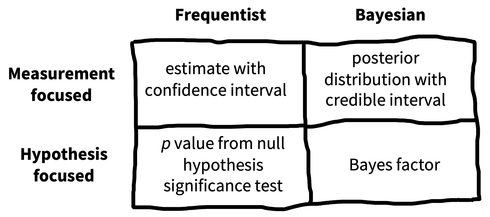
如果 NHST 方法有这么多问题，那应该用什么取代它？图 6.1 展示了一种组织不同推断方法的方式。最近有一种转向：使用 Bayes Factors 来量化支持不同候选假设的证据。Bayes Factors 可以帮助回答像问题（2）这样的问题。我们会介绍这些工具，并认为它们比 NHST 框架有更广的适用性，学生应该知道它们。另一方面，Bayes Factors 也不是万灵药。当它们被二分化使用时，会有许多与 NHST 相同的问题。
与其做二分式 frequentist 或 Bayesian hypothesis testing，我们会延续本书对 measurement precision 的主题强调，倡导一种 measurement 策略；它更适合问题（3）和（4）(Cumming 2014; Kruschke 和 Liddell 2018b)。这些策略的目标，是对数据中观察到的变异背后的关系，给出准确而精确的估计。
这不是一本统计学教材，我们也不会试图教授所有重要统计概念，让学生能够为各种各样的数据集建立好模型（抱歉！）。2 但我们确实希望你能够推理 inference 和 modeling。在本章中，我们会先对上一章的茶品尝例子做一些推断，用这个例子建立关于 hypothesis testing 和 inference 的直觉。然后，在 章 7 中，我们会开始看更复杂的模型，以及如何把它们拟合到真实数据集上。
2 如果你有兴趣深入学习，这里有两本书对我们影响很大。第一本是 Gelman 和 Hill (2006) 及其后续版本 Gelman, Hill, 和 Vehtari (2020)，它们从数据描述的视角教授 regression 和 multi-level modeling。第二本是 McElreath (2018)，这是一门关于建立数据因果结构的 Bayesian models 的课程。坦率说，这两本书都不是可以轻松坐下来读完的书（除非你是那种会在地铁上为了好玩读统计书的人），但二者都非常值得细读。我们鼓励你组织一个 reading group，一起做其中一本书的练习。这会对你的统计思维和科学思维产生很有价值的影响。
6.1 Sampling variation（抽样变异）
在 章 5 中，我们介绍了 Fisher 的茶品尝实验，并讨论了如何根据观察数据估计均值和均值差。这些所谓 point estimates 代表了在给定数据——也可能给定我们的 prior beliefs——时，我们对 population parameters 的最佳猜测。我们还可以报告这些 point estimates 中包含多少 statistical uncertainty。3 量化并推理这种不确定性是一个重要目标：在原始研究中，每组只有九名参与者，这只能提供一个低精度（也就是高度不确定）的总体估计。相比之下，如果我们用每组 200 名参与者重复实验，数据噪声会小得多，即使 point estimates 恰好完全相同，我们的不确定性也会小得多。
3 和上一章一样，我们这里只捕捉 statistical uncertainty。对某个估计 credibility 的整体看法，还应包括你关于研究设计知道的所有其他事情。
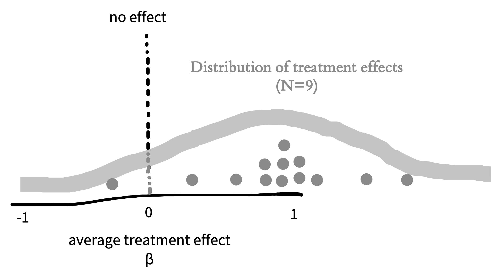
6.1.1 Standard errors（标准误）
要刻画一个估计中的不确定性，想象它的 sampling distribution 会很有帮助；sampling distribution 是这个估计在不同假想样本之间的分布。也就是说，让我们想象自己不是只做一次茶实验，而是做几十次、几百次，甚至几千次。这个想法常被简称为 repeated sampling。对于每个假想样本，我们使用类似招募方法招募一批新的参与者，并为该样本计算 \(\widehat{\beta}\)。每次都会得到完全相同的答案吗？不会，原因很简单：样本会有一些随机变异（噪声）。如果我们把这些估计 \(\widehat{\beta}\) 画出来，就会得到 图 6.2 中的 sampling distribution。
注记代码
在本章以及后续统计和可视化章节中，我们会尝试通过在这些 code 框中给出构建示例时使用的 R 代码，来帮助理解并展示如何在实践中使用这些概念。我们会假定你对 base R 和 Tidyverse 有一些了解——如果还没有，可以先看看 附录 D。虽然我们的图常常是手绘的，但即使是手绘图，也基于真实模拟结果！
因为我们会处理很多来自茶品尝例子的数据，所以写了一个叫 make_tea_data() 的函数，它会创建一个 tibble，其中包含一些来自现代茶品尝实验的（虚构）数据。如果你想跟着做，可以在 GitHub 上找到这个函数（https://github.com/langcog/experimentology/blob/main/helper/tea_helper.qmd）。
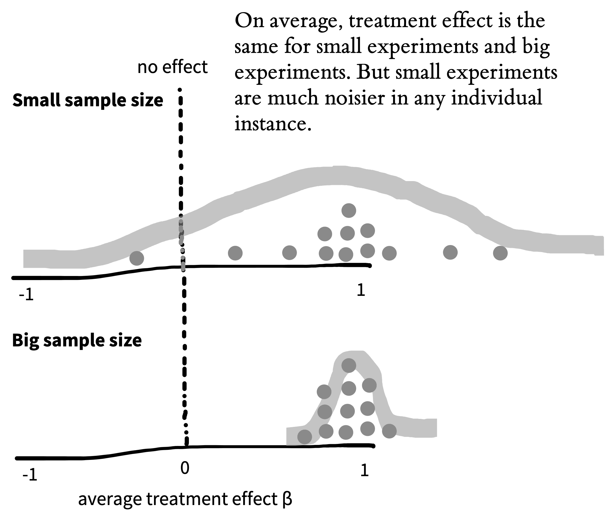
现在想象一下，我们还用每组 \(n = 200\) 而不是每组 \(n = 9\)，把实验重复了几千次。图 6.3 展示了那种情况下 sampling distribution 可能是什么样子。注意，当我们增加样本量时，sampling distribution 变窄了很多，这说明我们的不确定性降低了。更正式地说，sampling distribution 本身的标准差，称为 standard error，会随着样本量增加而降低。
Sampling distribution 不是单个样本中茶评分的分布。相反，它是给定大小的多个样本中的估计值分布。本质上，它告诉我们：如果用某个特定样本量运行一个新实验，这个实验的均值可能是什么样。
注记代码
为了模拟反复进行茶品尝实验，我们使用 purrr library 中一个特殊 tidyverse 函数：map()。map() 是一个非常强大的函数，它允许我们用不同输入多次运行另一个函数（这里就是上一章引入的 make_tea_data() 函数）。这里我们创建了一个 tibble，由 make_tea_data() 函数的 1,000 次运行组成。
samps <- tibble(sim = 1:1000) |>
mutate(data = map(sim, \(i) make_tea_data(n_total = 18))) |>
unnest(cols = data)接下来，我们只需使用 附录 D 中的 group_by() 和 summarize() workflow，得到每次模拟的 estimated treatment effect。
tea_summary <- samps |>
group_by(sim, condition) |>
summarize(mean_rating = mean(rating)) |>
group_by(sim) |>
summarize(delta = mean_rating[condition == "milk first"] -
mean_rating[condition == "tea first"])这个 tibble 给出了绘制上面 图 6.2 和 图 6.3 中 sampling distributions 所需的内容。
6.1.2 The central limit theorem（中心极限定理）
上一章我们讨论了 normal distribution，它是量化测量分布的一种方便且无处不在的工具。关于许多种估计——以及所有 maximum likelihood estimates——的 sampling distributions，有一件令人惊讶的事：随着样本量越来越大，它们会变成 normal distribution。即便这些估计在小样本中一点也不像 normal distribution，这个结果也成立！
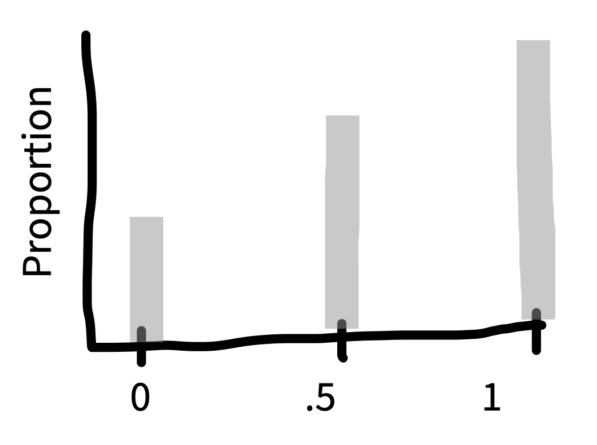
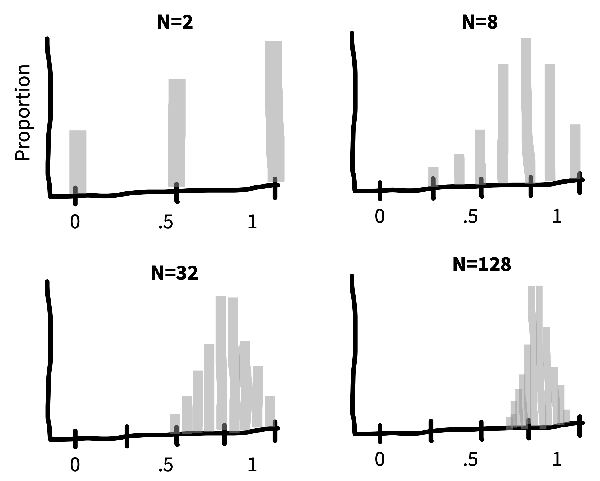
例如，假设我们在抛硬币，并想估计它正面朝上的概率（\(p_H\)）。如果我们抽取的每个样本都只包含 \(n = 2\) 次抛硬币，那么 图 6.4 就是估计值（\(\widehat{p}_H\)）的 sampling distribution。这个 sampling distribution 看起来一点也不像 normal distribution——它没有典型的“钟形曲线”形状！在两次抛硬币的样本中，\(\widehat{p}_H\) 只能取 \(0\)、\(0.5\) 或 \(1\)。
但看看当我们在 图 6.5: 中抽取越来越大的样本时会发生什么：我们得到了 normal distribution！ Sampling distributions 随着 \(n\) 变得很大而趋向 normal 的这种倾向，反映了一个深刻而优雅的数学定律，叫做 central limit theorem。
实际要点是，central limit theorem 直接帮助我们刻画 sample estimates 的不确定性。例如，当样本量足够大时（对样本均值来说大约是 \(n>30\)），样本均值的 standard error（也就是 sampling distribution 的标准差）近似为 \(\widehat{\text{SE}} = \sigma/\sqrt{n}\)。Sampling distribution 会随着样本量增加而变窄，因为我们除以的是观察数量的平方根。
注记代码
虽然我们的图是手绘的，但它们基于真实模拟。对于 central limit theorem 模拟，我们再次使用 map() 函数。我们设置一个 tibble，其中包含想尝试的不同值（我们称为 n_flips）。然后使用 map() 函数，为每个 n_flips 值运行 rbinom()（random binomial samples）。
这里使用的一个技巧是，rbinom() 接受一个额外参数，用来说明你想生成多少这样的随机值。这里我们生成 nsamps = 1000 个样本，也就是在每个 n 下给出 1,000 个 independent replicates。但对于单个 n_flips 值返回 1,000 个值的 array，会导致一个有点奇怪的结果：flips 的每个元素值都是一个 array。为处理这个问题，我们使用 unnest() 函数，把 array 展开回普通 tibble。
n_samps <- 1000
n_flips_list <- c(2, 8, 32, 128)
sample_p <- tibble(n_flips = n_flips_list) |>
mutate(flips = map(n_flips, \(f) rbinom(n = n_samps, size = f, prob = .7))) |>
unnest(cols = flips) |>
mutate(p = flips / n_flips)6.2 从变异到推断
让我们回到 Fisher 的茶品尝实验。这个实验的第一个创新，是使用随机化来恢复 milk ordering 因果效应的估计。但 Fisher 的分析不止我们已经描述的这些。
茶品尝实验的第二个创新，是创造一个关于实验中可能发生什么的模型。具体地说，Fisher 描述了一个假想的 null model：如果这位女士是随机选择杯子，而不是基于某种对茶的敏感性来选择，就会出现这种模型。在我们的茶评分实验中，null model 描述的是 tea-first 和 milk-first 杯子的评分之间没有差异时会发生什么。在 null model 下，真实 treatment effect（\(\beta\)）为零。
即使实际 treatment effect 为零，在 repeated sampling 中，我们仍应看到 \(\widehat{\beta}\)，也就是 treatment effect 的估计，存在一些变异。有时会得到一个小的正效应，有时会得到一个小的负效应。偶尔，仅仅因为 chance，我们会得到一个大效应。这正是上面描述的 sampling variation。
Fisher 的创新，是在给定 null model 的情况下，量化观察到 \(\hat{\beta}\) 各种取值的概率。然后，如果观察到的数据在 null model 下概率很低，我们就可以宣布 null 被拒绝。观察数据必须多不可能，才能拒绝 null？Fisher 宣称，“usual and convenient for experimenters to take 5% as a standard level of convenience”，由此确立了后来在整个科学中几乎被奉为圭臬的 \(0.05\) cutoff。4
4 实际上，在确立 \(0.05\) 作为 cutoff 后，Fisher 随即写道：“in the statistical sense, we thereby admit that no isolated experiment, however significant in itself, can suffice for the experimental demonstration of any natural phenomenon … in order to assert that a natural phenomenon is experimentally demonstrable we need, not an isolated record, but a reliable method of procedure. In relation to the test of significance, we may say that a phenomenon is experimentally demonstrable when we know how to conduct an experiment which will rarely fail to give us a statistically significant result.” 换句话说，Fisher 完全支持 replication！
让我们看看 null model 可能是什么样。前面讨论 sampling 时，我们已经尝试过把茶品尝实验重复几千次。现在，在 图 6.6 中，我们做同样的事情，但假定没有 treatment effect 的 null hypothesis 为真。图中显示了我们观察到的 treatment effects \(\hat{\beta}\) 的分布：有些略负，有些略正，还有少数明显正或负，但多数接近零。
让我们应用 \(p<0.05\) 标准。如果我们的观察在 null model 下概率小于 5%，那么 null model 很可能是错的。图 6.6 上的红色虚线显示了两个点：低于左边这个点的数据只占 2.5%，高于右边这个点的数据也只占 2.5%。这些区域称为分布的 tails。因为无论是 milk-first tea 更好还是 tea-first tea 更好，我们都同样愿意接受，所以正向和负向观察都被视为可能。5
5 因为我们查看分布两端，所以这叫做 “two-tailed” test。
注记代码
为了模拟 null model，我们可以做和之前同类的事情，只是向 make_tea_data() 函数指定真实效应差为零！
n_sims <- 1000
null_model <- tibble(sim = 1:n_sims, n = 18) |>
mutate(data = map(sim, \(i) make_tea_data(n_total = n, delta = 0))) |>
unnest(cols = data)我们再次使用 group_by() 和 summarize()，得到 null hypothesis 下 treatment effects 的分布。
null_model_summary <- null_model |>
group_by(sim, condition) |>
summarize(mean_rating = mean(rating)) |>
group_by(sim) |>
summarize(delta = mean_rating[condition == "milk first"] -
mean_rating[condition == "tea first"])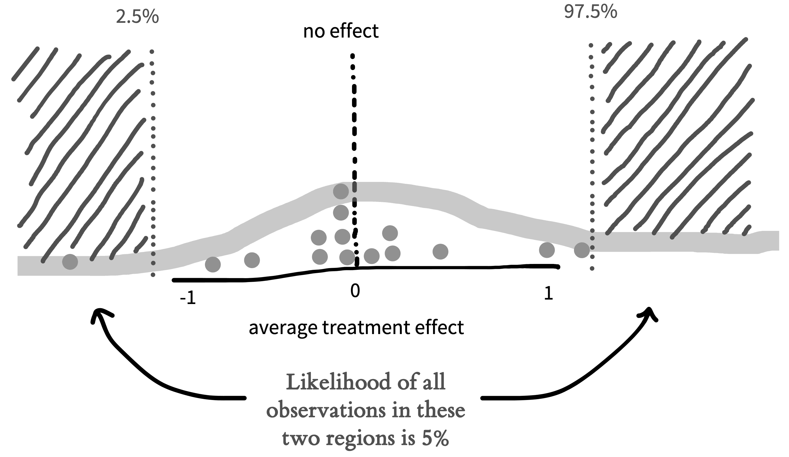
图 6.6 捕捉了 NHST 的逻辑：如果观察数据落在 null model 下概率小于 \(0.05\) 的区域中，那么我们拒绝 null。因此，当我们在实验的某个（真实）单次实例中观察到某个特定 treatment effect \(\hat{\beta}\) 时，就可以计算在 null model 下这些数据或任何更极端数据的概率。6 这个概率就是我们的 \(p\)-value；如果它很小，就授权我们得出 null 为 false 的结论。
6 “更极端”这一部分需要稍微解释。任何单个 outcome 本身都相对不太可能，因为估计值恰好等于那个精确值本来就令人惊讶（这里我们做了简化；谈论实数时会更复杂）。我们真正关心的是一组值。分布中间那些值作为一组来看相当可能；尾部那些值作为一组来看不太可能。我们想知道，包括我们的观察值以及尾部上更远值在内的那组数据点，其总概率是否小于 \(0.05\)。
正如前面所见，样本量越大，standard error 越小。这对 null model 也成立！图 6.7 展示了更大实验的预期 null distribution。
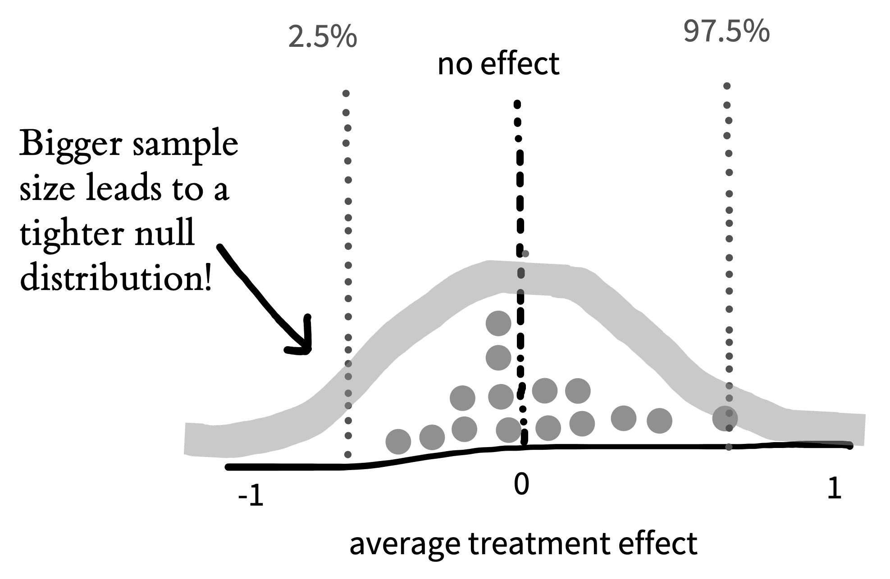
实验参与者越多，null distribution 就越紧，因此我们预期 null treatment effect 落入的区域越小。因为我们基于 null 的预期更加精确，所以能够基于更小的 treatment effects 拒绝 null。在这种 hypothesis testing 中，与 estimation 一样，我们的目标很重要。如果我们只是出于好奇检验一个假设，也许并不想测量太多杯茶。但如果我们是在为一家大型咖啡连锁设计茶策略，stakes 就更高；在这种情况下，也许我们会想做一个更广泛的实验！
注记代码
只要给模拟加一个参数，我们就可以对不同样本量下的 null regions 做更系统的模拟。
n_sims <- 10000
null_model_multi_n <- expand_grid(sim = 1:n_sims, n = c(12, 24, 48, 96)) |>
mutate(sim_data = map(n, \(n_i) make_tea_data(n_total = n_i, delta = 0))) |>
unnest(cols = sim_data)
null_model_summary_multi_n <- null_model_multi_n |>
group_by(n, sim, condition) |>
summarize(mean_rating = mean(rating)) |>
group_by(n, sim) |>
summarize(delta = mean_rating[condition == "milk first"] -
mean_rating[condition == "tea first"])
null_model_quantiles_multi_n <- null_model_summary_multi_n |>
group_by(n) |>
summarize(q_025 = quantile(delta, .025),
q_975 = quantile(delta, .975)) 下面是生成与我们插图相 comparable figure 的绘图代码：
ggplot(null_model_summary_multi_n, aes(x = delta)) +
facet_wrap(vars(n), nrow = 1, labeller = label_both) +
geom_histogram(binwidth = .25) +
geom_vline(xintercept = 0, color = "grey", linetype = "dotted") +
geom_vline(data = null_model_quantiles_multi_n,
aes(xintercept = q_025), color = "red", linetype = "dotted") +
geom_vline(data = null_model_quantiles_multi_n,
aes(xintercept = q_975), color = "red", linetype = "dotted") +
xlim(-2.5, 2.5) +
labs(x = "Difference in rating", y = "Frequency")最后一点：你可能会注意到，NHST paradigm 与 Popper 的 falsificationist 哲学（在 章 2 中介绍）之间有一个有趣的平行。在这两种情况下，你都永远无法接受真正感兴趣的假设。你唯一能做的，是观察与 null hypothesis 不一致的证据。NHST 的额外限制是，你唯一能够 falsify 的假设是 null！7
7 一个历史注记：我们这里描述为 NHST 的东西，既不是 Fisher 的方法，也不是下面介绍的 Neyman-Pearson 方法。它是 Gigerenzer (1989) 所称的 “the silent hybrid solution”：Fisher 倡导的更连续的 \(p\)-value 方法，被卷入 Neyman 和 Pearson 的 hypothesis testing 方法中。这个 hybrid——Fisher、Neyman 和 Pearson 都不会喜欢——就是我们现在大多视为理所当然的 received NHST approach。
6.3 做出推断
在刚才考虑的茶品尝例子中，我们试图从样本推断到更广泛的 population。具体来说，我们试图检验 milk-first tea 是否比 tea-first tea 评分更高。我们的 inferential goal 是一个清晰的二元答案：milk-first tea 更好吗？
通过定义 \(p\)-value，我们得到了一个回答这个问题的程序。如果 \(p < 0.05\)，我们拒绝 null。然后可以看差异方向；如果方向为正，就宣布 milk-first tea “显著”更好。让我们把这个程序与另一个不同过程比较一下；后者建立在上一章描述的 Bayesian estimation 想法之上。随后，我们可以回过头，在这个框架下考察 NHST。
6.3.1 Bayes Factors（贝叶斯因子）
Bayes Factors 是一种方法，用于基于观察数据集量化一个假设相对于另一个假设获得了多少支持。它们不会告诉你某个特定假设为真的概率，但允许你比较两个不同假设。
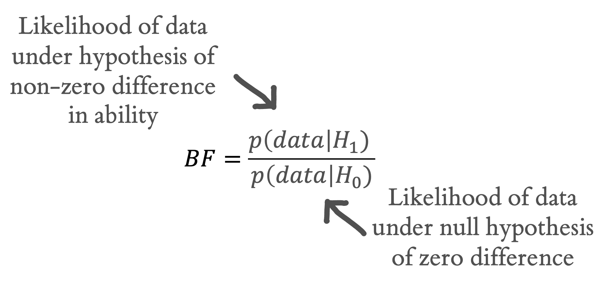
8 有时人们把支持 \(H_1\) 的 BF 称为 \(\text{BF}_{10}\)，把支持 \(H_0\) 的 BF 称为 \(\text{BF}_{01}\)。这个记号有点让人困惑，因为前者看起来像数字 \(10\)。
非正式地说，我们现在已经讨论了关于茶情境的两个不同假设：参与者可能没有茶辨别能力——导致 chance performance。我们称之为 \(H_0\)。或者，他们可能有某种非零能力——导致高于 chance 的表现。我们称之为 \(H_1\)。Bayes Factor 简单来说就是，在 \(H_1\) 下数据的 likelihood（以上面使用的技术意义），与在 \(H_0\) 下数据的 likelihood 之比（图 6.8）。Bayes Factor 是一个比值，所以如果它大于 \(1\)，数据在 \(H_1\) 下比在 \(H_0\) 下更 likely；介于 \(1\) 和 \(0\) 之间的值则反过来。BF 为 \(3\) 意味着支持 \(H_1\) 的证据是支持 \(H_0\) 的三倍，或者等价地，支持 \(H_0\) 的证据是支持 \(H_1\) 的 \(1/3\)。8
注记代码
Bayes Factors 用 BayesFactor R package (Morey 和 Rouder 2023) 计算起来非常容易。我们只需要把两组评分传给 ttestBF() 函数！
library(BayesFactor)
tea_bf <- ttestBF(x = filter(tea_data, condition == "milk first")$rating,
y = filter(tea_data, condition == "tea first")$rating,
paired = FALSE)关于 Bayes Factor，有两点值得注意。第一，和 \(p\)-value 一样，它本质上是一个连续测量。你可以通过宣布某个 cutoff（比如 \(\text{BF} > 3\) 或 \(\text{BF} > 10\)）来人为二分基于 Bayes Factor 的决策，但并不存在一个内在阈值，让你可以说证据是 “significant”。表 6.1 中展示了一些解释指南 (from S. N. Goodman 1999)。9 另一方面，像 \(\text{BF} > 5\) 或 \(p < 0.05\) 这样的 cutoffs 并不太有信息量。所以，虽然我们提供这张表来指导解释，但我们提醒你：应该始终报告并解释实际 Bayes Factor，而不是它高于还是低于某个 cutoff。
9 有些人喜欢 Jeffreys (1961) 提供的指南，其中包含 “barely worth mentioning”（\(1 > \text{BF} > 3\)）这类类别。
关于 Bayes Factor 的第二点，是它不依赖我们对 \(H_1\) vs \(H_0\) 的 prior probability。我们可能认为 \(H_1\) 非常不可信。但 BF 独立于那个 prior belief。因此，这意味着它测量的是证据应该让我们的信念相对于 prior 移动多少。理解这一点的一个好方式是：Bayes Factor 计算的是，我们的信念——不管它们是什么——应该因数据而改变多少 (Morey 和 Rouder 2011)。
实践中，Bayes Factors 既棘手又有价值的地方在于，你需要定义 \(H_0\) 和 \(H_1\) 到底是什么的实际模型。这个过程会迫使一些假设变得明确。这里我们不会深入讲如何建立这些模型——这是一个很大的话题，Bayesian data analysis 的书中会大量讨论。10 这里的目标只是给出一个关于 Bayes Factors 是什么的大致感觉。
10 除了上面提到的 McElreath 那本书之外，还有两本不错的书：Gelman 等 (1995) 更偏统计，Kruschke (2014) 更聚焦心理学数据分析。Nicenboim, Schad, 和 Vasishth (2024) 正在准备的一本 web-book 看起来也很好（https://bruno.nicenboim.me/bayescogsci）。
6.3.2 \(p\)-values
现在让我们回到 NHST 和 \(p\)-value。通过上面的讨论，我们已经有了一个关于 \(p\)-value 是什么的工作定义：它是在 null hypothesis 下，数据（或任何更极端数据）的概率。这个数量与我们的 Bayesian estimate 或 BF 有什么关系？首先要注意，\(p\)-value 非常接近 likelihood 本身（但并不相同）。11
11 Likelihood——对 Bayesians 和 frequentists 都一样——是数据的概率，和 \(p\)-value 类似。但不同于 \(p\)-value，它不额外包含更极端数据的概率。
12 \(t\)-tests 也可以用于把一个样本与某个 baseline 比较的情况。
接下来，我们可以使用一个简单的统计检验，也就是 \(t\)-test，来为实验计算 \(p\)-values。如果你还没遇到过，\(t\)-test 是一种计算 \(p\)-value 的程序，它通过使用“两个变量之间没有差异”的 null hypothesis，来比较两个变量的分布。12 \(t\)-test 使用数据计算一个 test statistic，这个统计量在 null hypothesis 下的分布是已知的。然后，这个统计量的值可以被转换为用于推断的 \(p\)-values。
注记代码
标准 t.test() 函数通过默认 stats package 内置在 R 中。这里我们只是确保通过 paired = FALSE 和 var.equal = TRUE 这两个 flags 指定想要的检验类型（后者表示 equal variances 假设）。
tea_t <- t.test(x = filter(tea_data, condition == "milk first")$rating,
y = filter(tea_data, condition == "tea first")$rating,
paired = FALSE, var.equal = TRUE)想象我们用 \(n = 48\) 开展一次茶品尝实验，并对实验结果执行 \(t\)-test。在这个案例中，我们看到两组之间的差异在 \(p<0.05\) 下显著：\(t(46) = 2.86\), \(p = 0.006\)。
表达式 \(t(46) = 2.86\), \(p = 0.006\) 是按照 American Psychological Association 报告 \(t\)-test 的标准方式。这个报告的第一部分给出 \(t\) 值，并在括号中用该检验的 degrees of freedom 限定。这里我们不会太关注 degrees of freedom 的概念；现在只需要知道，这个数字量化了数据提供的信息量，在本例中是 48 个数据点减去两个均值（每个样本一个均值）。
让我们比较 \(p\)-values 和 Bayes Factors（使用 BayesFactor R package 中的默认设置计算）。在 表 6.2 中，行表示模拟实验，它们有不同的参与者总数（N）和不同的 average treatment effects。随着参与者更多、效应更大，\(p\) 和 BF 都会上升。一般来说，BFs 往往比 \(p\)-values 稍微保守一些，所以 \(p<0.05\) 有时可能对应不到 3 的 BF (Benjamin 等 2018)。例如，看一下 48 名参与者、effect size 为 1 的那一行：\(p\)-value 小于 \(0.05\)，但 Bayes Factor 只有 \(2.0\)。
不过，关于 \(p\)-values 的关键点，不只是它们是一种 data likelihoods，而是它们被用于一个特定推断程序中。NHST 的逻辑是，我们对效应是否存在做出二元决定。如果 \(p < 0.05\)，null hypothesis 被拒绝；否则不拒绝。 正如 Fisher (1949, p. 19) 写道：
It should be noted that the null hypothesis is never proved or established, but is possibly disproved, in the course of experimentation. Every experiment may be said to exist only in order to give the facts a chance of disproving the null hypothesis.
从科学视角看，\(p\)-values 的主要问题是，研究者通常不只对拒绝 null hypothesis 感兴趣，也对 alternative（我们感兴趣的那个假设）的证据感兴趣。Bayes Factor 是在 Bayesian 框架中量化 alternative hypothesis 的正向证据的一种方法。不过，Fisher 式 \(p\)-values 方法中的这个问题早已为人所知，因此也有一种替代性的 frequentist 方法。
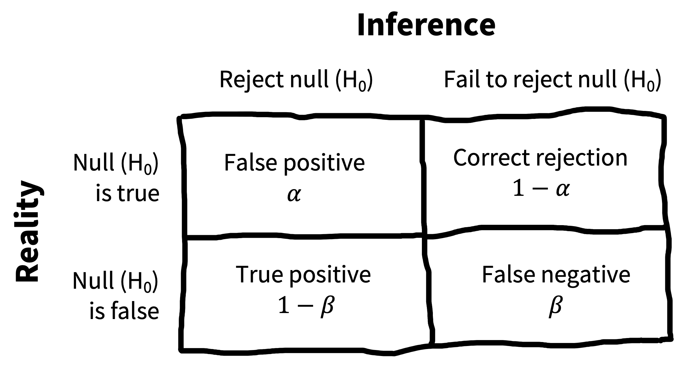
6.3.3 The Neyman-Pearson approach（Neyman-Pearson 取向）
一种“修补” NHST 的方式，是引入一种 decision-theoretic view，如 图 6.9 所示。13 在这种被称为 Neyman-Pearson view 的观点中，存在一个真实的 \(H_1\)，尽管它没有被具体指定。因此，世界的真实状态可能是 \(H_0\) 为真，也可能是 \(H_1\) 为真。\(p<0.05\) criterion 是我们愿意拒绝 null 的阈值，因此它构成了我们的 false positive rate \(\alpha\)。但我们还需要定义 false negative rate，惯例上称为 \(\beta\)。14
14 不幸的是，\(\beta\) 也非常常用于 regression coefficients——也正因为如此，我们把它用作因果效应的符号。下一章我们还会使用这些 \(\beta\)。这些 \(\beta\) 不要与 false negative rates 混淆。抱歉，这里只是统计学家用同一个希腊字母表示两个不同东西的地方。
15 要做出真正理性的决策，你可以把这张图与某种 utility function 结合起来，用来评估不同 outcomes 的成本。例如，你可能认为，推进一个不起作用的 intervention 比维持 business as usual 更糟。在那种情况下，你会给 false positive 分配更高成本，并相应尝试采用更保守 criterion。这里我们不会介绍这类 decision analysis，但如果你感兴趣，Pratt 等 (1995) 是一本关于 statistical decision theory 的经典教材。
设定这些 rates 是一个决策问题：如果你判断 intervention 有效的标准过于保守，就会冒 false negative 的风险，也就是错误地得出它不起作用的结论。如果你对证据的评估过于宽松，就会冒 false positive 的风险。15 然而，实践中，人们通常把 \(\alpha\) 留在 \(0.05\)，并试图通过增加样本量来控制 false negative rate。
正如在 图 6.6 中看到的，样本越大，对于任何给定的非 null effect，你拒绝 null 的机会越高。但这些机会也会取决于你估计的 effect size。这种表述催生了 classical power analysis 的想法，我们会在 章 10 中介绍。多数为 binary inference 辩护的人，都对使用 Neyman-Pearson approach 感兴趣。在我们看来，这种方法有其位置（它对 power analysis 尤其有用），但仍然遭受所有 binary inference techniques 都有的实质性问题。
注记深入
Null（零假设）下的 nonparametric resampling
Hypothesis testing 需要知道 null distribution。在上面的例子中，使用统计理论，并根据 binomial 或 normal distribution 的知识推导 null distribution 很容易。但有时我们不知道 null distribution 会是什么样。如果茶品尝实验中的评分数据非常 skewed，比如有很多低评分和少数很高评分（如 图 6.10），该怎么办？
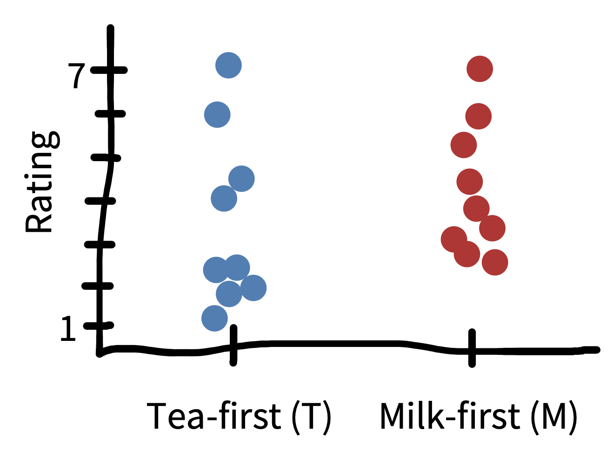
面对这样的 skewed data，我们不能心安理得地继续使用 \(t\)-test，因为在只有 \(n = 18\) 时，我们不一定能相信 central limit theorem 已经充分“启动”，使检验即便在 skewness 下仍能工作。换句话说，我们不能确定这个案例中的 null distribution 是 normal（Gaussian）的。
近似 null distribution 的另一种方式，是通过 nonparametric resampling。Resampling 意味着我们会从现有样本中抽取新样本；nonparametric 意味着我们这样做时，会避免关于 null distribution 形状的假设——这与依赖此类假设的 parametric 方法相对）。这些技术有时称为 “bootstrapping” techniques。
其想法是，如果 treatment 真的对 outcome 没有效应，那么观察值在 treatment 和 control groups 之间就是 exchangeable 的。也就是说，treatment 和 control groups 之间不会存在系统性差异。这个属性在我们的样本中可能为真，也可能不为真（这正是我们做 hypothesis test 的原因），但我们可以用一种强制 exchangeability 的方式，从现有样本中抽取新样本。
要用茶品尝数据做这种检验，我们会在数据集中随机打乱评分，同时保持 condition assignments 固定。如果这样做几千次，并在每次都计算 treatment effect，结果就是一个 null distribution：当没有 condition effect 时，我们可能预期 treatment effect 看起来是什么样。本质上，我们这里使用的是一个模拟版本的 “random assignment”，以打破 condition manipulation 与 observed data 之间的依赖。
随后，我们可以把实际 treatment effect 与这个 nonparametric null distribution 比较。如果实际 treatment effect 小于 null distribution 的 2.5th percentile，或大于 97.5th percentile，那么我们会以 \(p < 0.05\) 拒绝 null，就像使用 \(t\)-test 一样。
基于 resampling 的 检验在各种情形中都极其有用。它们有时不如 parametric approaches 有 power，而且几乎总是需要更多计算，但其通用性让它们成为数据分析中很好的 generic tool。
6.4 Inference（推断）及其不满
在本章前面几节中，我们回顾了 NHST 和 Bayesian approaches to inference。现在是时候退一步，思考 inference practices——尤其是与 NHST 相关的实践——以哪些方式给心理学研究带来了问题。我们会先讨论围绕 \(p\)-values 的一些问题，然后给出一个与 “\(p\)-hacking” 过程相关的具体 事故报告，并对统计检验如何与人类推理相关做一些一般性的哲学讨论。
6.4.1 \(p\)-values 解释中的问题
\(p\)-values 基本上就是 likelihoods，用的是上一章介绍的意义。16 它们是在 null hypothesis 下数据的 likelihood！这个 likelihood 是一个需要知道的关键数字——原因之一是用于计算 Bayes Factor。但它并不会告诉我们许多我们想知道的东西！
16 唯一不同的是，它们是 observed data or any more extreme 的 likelihood。
例如，\(p\)-values 不会告诉我们，在我们可能感兴趣的某个具体 alternative hypothesis 下数据的概率——那是 posterior probability \(p(H_1 | \text{data})\)。当我们的茶品尝 \(t\)-test 得到 \(t(46) = 2.86\), \(p = 0.006\) 时，那个 \(p\) 不是 null hypothesis 为真的概率！它当然也不是 milk-first tea 更好的概率。
当 \(p>0.05\) 时，你能得出什么结论？按照 NHST 的经典逻辑，答案是“什么也没有”！未能拒绝 null hypothesis，并不会给你任何额外证据来支持 null。即使数据（或某些更极端数据）在 \(H_0\) 下的概率很高，它们在 \(H_1\) 下的概率也可能一样高，甚至更高。17 但许多实践中的研究者会犯这个错误。Aczel 等 (2018) 编码了 2015 年的一组文章，发现 72% 的负性陈述都与其所选统计 paradigm 的逻辑不一致——多数是研究者在只是未能拒绝 null 时，说某个效应不存在。
17 当然，把这二者相互权衡，又会把你带回 Bayes Factor。
这些并不是 \(p\)-values 的唯一问题。事实上，人们很难理解 \(p\)-values 到底说了什么，以至于有整篇文章专门讨论这些误解。Table 6.3 展示了一组由 S. N. Goodman (2008) 记录并反驳的误解。
我们只看其中几个。误解 1 是：如果 \(p=0.05\)，null 为真的概率就是 5%。这个误解来自混淆 \(p(H_0 | \text{data})\)（posterior）和 \(p(\text{data} | H_0)\)（likelihood——也就是 \(p\)-value）。误解 2——\(p > 0.05\) 允许我们接受 null——也源于 posterior 和 likelihood 的这种反转。误解 3 则是把 \(p\)-value 误解为 effect size（上一章我们学过 effect size）：大效应可能具有临床重要性，但只要样本量足够大，即使是非常小的效应也可以得到很小的 \(p\)-value。这里我们不会逐条讲完所有误解，但鼓励你挑战自己，把它们都推演一遍（就像下面的练习一样）。
| Misconception | |
|---|---|
| 1 | “If \(p = 0.05\), the null hypothesis has only a 5% chance of being true.” |
| 2 | “A nonsignificant difference (e.g., \(p \geq 0.05\)) means there is no difference between groups.” |
| 3 | “A statistically significant finding is clinically important.” |
| 4 | “Studies with \(p\)-values on opposite sides of \(0.05\) are conflicting.” |
| 5 | “Studies with the same \(p\)-value provide the same evidence against the null hypothesis.” |
| 6 | “\(p = 0.05\) means that we have observed data that would occur only 5% of the time under the null hypothesis.” |
| 7 | “\(p = 0.05\) and \(p \leq 0.05\) mean the same thing.” |
| 8 | “\(p\)-values are properly written as inequalities (e.g., ‘\(p \leq 0.02\)’ when \(p = 0.015\)).” |
| 9 | “\(p = 0.05\) means that if you reject the null hypothesis, the probability of a false positive error is only 5%.” |
| 10 | “With a \(p = 0.05\) threshold for significance, the chance of a false positive error will be 5%.” |
| 11 | “You should use a one-sided \(p\)-value when you don’t care about a result in one direction, or a difference in that direction is impossible.” |
| 12 | “A scientific conclusion or treatment policy should be based on whether or not the \(p\)-value is significant.” |
除了这些误解之外，还有另一个问题。\(p\)-value 是某一组事件发生的概率（对应于 observed data 或任何 “more extreme” data——也就是说，更远离 null 的数据）。既然 \(p\)-values 是概率，我们可以把它们跨不同事件结合起来。如果我们运行一个 “null experiment”——也就是真实效应为零的实验——得到 \(p < 0.05\) 的数据集的概率当然是 \(0.05\)。但如果运行两个这样的实验，我们以概率 \(0.1\) 得到 \(p < 0.05\)。等运行到 20 个实验时，我们得到阳性结果的概率是 \(0.64\)。
如果运行 20 个实验，然后只报告其中阳性的那些（按设计，它们是 false positives），却假装它们仍然是 “statistically significant”，显然是重大错误。同样的事情也适用于在单个实验中做 20 个不同统计检验。针对这个被称为 multiple comparisons 的问题，可以做许多统计校正。18 但更广泛的问题是 transparency：除非你知道合适的实验或检验集合是什么，否则不可能实施这些校正！19
18 最简单且最通用的一种是 Bonferroni correction，它只是把 \(0.05\)（或者技术上说，无论你的阈值是什么）除以你正在做的比较次数。使用这个校正，如果你做 20 个 null experiments，false positive 的概率会是 3%。
19 这个问题在 \(p\)-values 上尤其麻烦，因为它们常被呈现为一组彼此独立的检验；但当你计算许多独立 Bayes Factors 时，multiple comparisons 问题同样会出现。通过选择性报告 Bayes Factors 来进行 “Posterior hacking” 完全是可能的 (Simonsohn 2014)。
注记事故报告
Extraordinary claims 是否需要 extraordinary evidence？
在一篇轰动论文中，Bem (2011) 提出了九个实验，并声称它们为 precognition 提供了证据——也就是参与者不知何故预先知道未来；这篇论文可能无意中启动了 replication crisis。在第一个实验中，Bem 给 100 名本科生中的每个人展示 36 个 two-alternative forced choice trials；在图片出现之前，他们必须猜测屏幕上两个位置中哪一个会出现图片。当然，按 chance，参与者应有 50% 的时间选择正确一侧。Bem 发现，专门对 erotic pictures 来说，参与者猜测正确率为 53.1%。在 chance guessing 的 null hypothesis 下，这个猜测率是意外的（\(p = 0.01\)）。另外八项研究总计超过 1,000 名参与者，也产生了看似支持的证据；参与者甚至在刺激呈现之前，就似乎表现出各种心理效应！
基于这些证据，我们是否应该得出 precognition 存在的结论？大概不应该。Wagenmakers 等 (2011) 提出了对 Bem 发现的批评，认为（1）Bem 的实验本质上是 exploratory（没有 preregistered），（2）Bem 的结论 a priori 不太可能，（3）其实验中的统计证据水平很低。我们认为这些论点单独看都很有说服力；合在一起，它们构成了反对 Bem 解释的决定性案例。
首先，我们已经讨论过，在实验者有机会在测量、操纵、样本和分析选择上进行 analytic flexibility 的情境中，需要保持怀疑。Flexibility 会让研究者有可能从 “garden of forking paths” 中 cherry-pick 那组能给其偏好假设带来阳性结果的决策（更多细节见 章 11）。即使在 Bem 论文的实验 1 中，也有大量 flexibility 展示出来。虽然研究中有 100 名参与者，但他们可能是事后由两个不同样本合并而来，一个 40 人、一个 60 人，且二者看到不同 conditions。40 人猜测 erotic、negative 和 neutral pictures 的位置；60 人看到 erotic、positive non-romantic 和 positive romantic pictures。每个 condition 的均值大概都被拿来与 chance 比较（至少六次比较，false positive rate 为 \(0.26\)）。如果 positive romantic pictures 显著，Bem 当然也可以像解释 erotic pictures 那样解释这个发现。
第二，正如我们讨论过的，接近 \(0.05\) 的 \(p\)-value 并不一定提供反对 null hypothesis 的强证据。Wagenmakers 等人为 Bem 论文中的每个实验计算了 Bayes Factor，发现很多情况下，在默认 Bayesian \(t\)-test 下，支持 \(H_1\) 的证据量相当 modest。实验 1 也不例外：BF 为 \(1.64\)，即便在考虑上面提到的 multiple-comparisons 问题之前，也只给某种非零效应假设提供了 “anecdotal” 支持。
最后，由于 precognition 没有任何先前有说服力的科学证据支持（尽管有许多人尝试获得这种证据），而且它违背了已确立的物理定律，也许我们应该给 Bem 的 \(H_1\)，即非零 precognition effect，分配很低的 prior probability。采取强 Bayesian 立场，Wagenmakers 等人建议，我们最好采用一个反映 precognition 有多不可能的 prior，比如 \(p(H_1) = 10^{-20}\)。如果采用这个 prior，那么即便是一个设计非常好、信息量很高的实验（Bayes Factor 传递 substantial 甚至 decisive 证据），仍会导向很低的 precognition posterior probability。
Wagenmakers 等人得出结论：Bem 的论文并不支持 precognition；相反，它的结论应该是心理学家需要修改自己关于分析数据的想法（并避免 \(p\)-hacking）！
6.4.2 关于概率的哲学（和经验）观点
到目前为止，我们把 Bayesian 和 frequentist tools 呈现为两组不同计算。但事实上，这些不同工具来自关于概率到底是什么的根本不同哲学视角。非常粗略地说，frequentist approaches 倾向于认为，概率量化的是某些事件的长期频率。因此，如果我们说某个事件 outcome 的概率是 0.5，就是在说如果这个事件发生几千次，这个 outcome 的长期频率会是总事件的 50%。相比之下，Bayesian viewpoint 并不依赖事件可以被精确重复的这种意义。相反，概率的 subjective Bayesian interpretation 是：它量化的是一个人对某个 outcome 的信念程度。20
20 这确实是一个非常粗略的描述。如果你有兴趣更多了解这一哲学背景，我们推荐 Stanford Encyclopedia of Philosophy 中的 “Interpretations of Probability” 条目（https://plato.stanford.edu/entries/probability-interpret）。
关于概率是什么的深层哲学辩论，你不必选边站。但有用的是知道：人们实际推理世界的方式，似乎可以被 subjective Bayesian view of probability 很好地描述。近期认知科学研究在把推理描述为 Bayesian inference 过程方面取得了很大进展；在这个过程中，概率描述对不同假设的信念程度 (for a textbook review of this approach, see N. D. Goodman, Tenenbaum, 和 The ProbMods Contributors 2016)。这些假设又很像我们在 章 2: 中描述的理论：它们描述不同抽象实体之间的关系 (Tenenbaum 等 2011)。你可能以为科学家在这方面不同于普通人，但概率推理和判断研究中的一个惊人发现是，expertise 并没有那么重要。受过统计训练的科学家——甚至统计学家——会犯许多与未受训练学生相同的推理错误 (Kahneman 和 Tversky 1979)。即使儿童也似乎以一种有点像 Bayesian inference 的方式进行直觉推理 (Gopnik 2012)。
这些认知科学发现帮助解释了人们（包括科学家）在推理 \(p\)-values 时遇到的一些问题。如果你是一个直觉上的 Bayesian reasoner，你大概追踪的是自己有多相信某个假设（它的 posterior probability）。因此，许多人会把 \(p\)-value 当作 null hypothesis 的 posterior probability。21 这正是 表 6.3 中 fallacy 1 所说的——“If \(p = 0.05\), the null hypothesis has only a 5% chance of being true.” 但这种等价是错误的！写成数学形式，\(p(\text{data} | H_0)\)（让我们计算 \(p\)-value 的 likelihood）并不等同于 \(p(H_0 | \text{data})\)（我们想要的 posterior）。借用上面 事故报告 的例子，即使在 null hypothesis 给定时观察到 ESP 数据的概率很低，也不意味着 ESP 的概率很高。
21 Cohen (1994) 对这个问题有很好的处理。
6.4.3 使用什么框架？
Binary inferences 的问题在于，它们会促成一些能给科学生态系统引入 bias 的行为。按照 statistical significance 的逻辑，一个实验要么 “worked”，要么没有。因为几乎所有人通常都更想要一个 worked 的实验，而不是一个没 worked 的实验，像 \(p\)-values 这样的 inference criteria 经常成为 selection 的目标，正如我们在 章 3 中讨论过的。22
22 更一般地说，这种模式大概是 Goodhart’s law 的例子：当一个测量变成目标，它就不再是好测量 (Strathern 1997)。一旦统计推断程序的 outcomes 成为发表目标，它们就会受到 selection biases 的影响——例如 \(p\)-hacking——从而变得不那么有意义。
如果你想量化支持或反对某个假设的证据，值得考虑 Bayes Factors 是否比 \(p\)-values 更能回答你的问题。实践中，\(p\)-values 很难理解，也常被误用——不过公平地说，BFs 也经常被误用。这些问题可能根植于人类如何推理概率的基本事实。
尽管有理由担心 \(p\)-values，但对许多实践中的科学家来说（至少在写作时），是否使用它们并没有唯一正确答案。即使我们希望一直做 Bayesian，也存在一些障碍。首先，虽然新的计算工具让拟合 Bayesian models 和提取 Bayes Factors 比以前容易得多，但平均而言，拟合 Bayesian model 仍然比拟合 frequentist model 难不少。第二，因为 Bayesian analyses 没那么熟悉，要说服导师、审稿人和资助者使用它们，可能是一场 uphill battle。
作为一组作者，我们中有些人更 Bayesian 而不是 frequentist，有些人更 frequentist 而不是 Bayesian——但我们都认识到，需要根据正在处理的问题在 statistical paradigms 之间移动。此外，很多时候我们并不那么担心自己使用的是哪种 paradigm。Paradigms 在进行 binary inferences 时差异最大；而当它们用于量化 measurement precision 时，常常看起来相似得多。
6.5 计算精确度
上一节提出了一个反对用 \(p\)-values 做二分式推断的论证。但我们仍然想从自己有限样本中知道的东西，推进到关于 population 的某种推断。我们应该怎么做？
6.5.1 Confidence intervals（置信区间）
Binary hypothesis testing 的一个替代方案，是询问估计的精确度——某个特定样本的估计与感兴趣的 population parameter 有多相似。例如，我们的茶品尝效应估计与 population 中的真实效应有多接近？我们不知道真实效应是什么，但关于 sampling distributions 的知识让我们能对估计有多精确做一些猜测。
Confidence interval 是一种方便的 frequentist 方式，用来概括 sampling distribution 的变异性——因此也概括 point estimate 有多精确。Confidence interval 表示在给定数据下，感兴趣参数可能具有的一系列 plausible values。更正式地说，对于某个估计（像我们的例子一样称为 \(\widehat{\beta}\)），95% confidence interval 被定义为 \(\beta\) 的一系列可能值；如果我们进行 repeated sampling，由这些样本生成的 intervals 中有 95% 会包含真实参数 \(\beta\)。
Confidence intervals（CIs） 是通过估计 \(\widehat{\beta}\) 的 sampling distribution 中间 95% 来构建的。由于我们的英雄 central limit theorem，对于合理大的样本，我们可以把 sampling distribution 当作 normal。基于这一点，常见做法是构建 95% confidence interval \(\widehat{\beta} \pm 1.96 \; \widehat{\text{SE}}\)。23 如果我们开展 100 次实验，并每次都计算一个 confidence interval，我们应该预期其中 95 个 intervals 包含真实 \(\beta\)，而剩下 5 个不包含 \(\beta\)。24
23 这种 CI 被称为 “Wald” confidence interval。
24 如果你没有足够的茶做 100 次实验来确认这一点，可以用这个很好的模拟工具虚拟完成：https://istats.shinyapps.io/ExploreCoverage。
Confidence intervals 就像是在押注你从样本中做出的推断。你抽到的样本像是拉了一次老虎机；它有 95% 的时间会中奖（也就是 confidence interval 包含真实参数）。更简洁地说：95% 的 95% confidence intervals 包含 population parameter 的真实值。
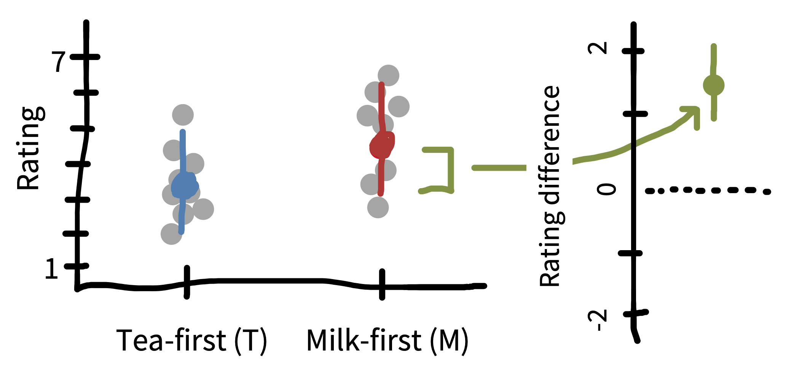
为了可视化，我们可以在单个 estimates 上显示 confidence intervals（图 6.11 左侧）。这些告诉我们，每个数量的估计相对于 population estimate 有多精确。但我们主要一直在讨论 treatment effect \(\widehat{\beta}\) 上的 CI（图 6.11 右侧）。这个 CI 让我们能够推断它是否与零重叠——在这个案例中，这实际上等价于 \(t\)-test 是否统计显著。
注记代码
Analytically 计算 confidence intervals 相当容易。这里我们先计算 conditions 之间差异的 standard error。唯一稍微棘手的部分是，我们需要计算 pooled standard deviation。
tea_ratings <- filter(tea_data, condition == "tea first")$rating
milk_ratings <- filter(tea_data, condition == "milk first")$rating
n_tea <- length(tea_ratings)
n_milk <- length(milk_ratings)
sd_tea <- sd(tea_ratings)
sd_milk <- sd(milk_ratings)
tea_sd_pooled <- sqrt(((n_tea - 1) * sd_tea ^ 2 + (n_milk - 1) * sd_milk ^ 2) /
(n_tea + n_milk - 2))
tea_se <- tea_sd_pooled * sqrt((1 / n_tea) + (1 / n_milk))有了 standard error 后，我们可以得到 conditions 之间的估计差异，并通过将 standard error 乘以 1.96 来计算 confidence intervals。
delta_hat <- mean(milk_ratings) - mean(tea_ratings)
tea_ci_lower <- delta_hat - tea_se * qnorm(0.975)
tea_ci_upper <- delta_hat + tea_se * qnorm(0.975)6.5.2 对 confidence intervals 有多少 confidence？
Confidence intervals 常常被学生和研究者误解 (Hoekstra 等 2014)。想象一位研究者开展了一项实验，并报告说 “the 95% confidence interval for the mean ranges from \(0.1\) to \(0.4\).” 表 6.4 中的所有陈述，虽然在这种情境下很诱人，但技术上都是错的。
| Misconception | |
|---|---|
| 1 | “The probability that the true mean is greater than \(0\) is at least 95%.” |
| 2 | “The probability that the true mean equals \(0\) is smaller than 5%.” |
| 3 | “The ‘null hypothesis’ that the true mean equals \(0\) is likely to be incorrect.” |
| 4 | “There is a 95% probability that the true mean lies between \(0.1\) and \(0.4\).” |
| 5 | “We can be 95% confident that the true mean lies between \(0.1\) and \(0.4\).” |
| 6 | “If we were to repeat the experiment over and over, then 95% of the time the true mean falls between \(0.1\) and \(0.4\).” |
所有这些陈述的问题在于，在 frequentist framework 中，population parameter 只有一个真实值，而 confidence intervals 捕捉的变异性是关于样本的，不是关于参数本身的。25 因此，我们不能对参数值的概率或自己对具体数字的 confidence 做任何陈述。重申一次，我们能说的是：如果我们重复许多次开展实验并计算 confidence interval 的程序，长期来看，其中 95% 的 confidence intervals 会包含真实参数。
25 相比之下，Bayesians 认为参数本身是 variable，而不是 fixed。
Confidence interval 的 Bayesian analog 是 credible interval。回忆一下，对 Bayesians 来说，参数本身被认为是 probabilistic（也就是受 random variation 影响的），而不是 fixed。对于一个估计 \(\widehat{\beta}\) 来说，95% credible interval 表示 \(\beta\) 的一系列可能值，使得 \(\beta\) 有 95% 的概率落在该区间内。因为我们现在戴上了 Bayesian hats，所以被“允许”把 \(\beta\) 当作 probabilistic 而不是 fixed 来谈。实践中，credible intervals 是通过找到 \(\beta\) 的 posterior distribution 来构建的，就像 章 5 中那样，然后例如取中间 95%。
Credible intervals 很好，因为它们不会引发许多围绕 confidence intervals 的 inference fallacies。例如，它们实际上确实表示我们关于 \(\beta\) 可能在哪里的信念。尽管 credible intervals 和 confidence intervals 在技术上有差异，但实践中——在样本量较大、priors 较弱时——许多情况下它们会彼此相当相似。26
26 在数据较少或 priors 较强的情况下，它们可能明显分歧 (Morey 等 2016)，但根据我们的经验，这种情况相对少见。
6.6 本章小结：推断
Inference tools 帮助你从样本特征移动到 population 特征。这种移动是从研究数据进行 generalization 的关键部分。但我们希望已经说服你：inference 并不一定意味着对效应存在与否做出二元决定。寻求估计一个效应及其相关 precision 的策略，通常更有助于作为理论的 building block。随着我们转向在更复杂的实验设计中估计因果效应，这一过程会需要更复杂的模型。为此，下一章会为如何建立这类模型提供一些指导。
注记讨论问题
注记阅读材料
这里描述的许多概念，都通过交互式可视化得到了漂亮展示。我们推荐 https://seeing-theory.brown.edu 作为统计概念的广泛概览，也推荐 https://rpsychologist.com/viz，其中有许多 specifically illustrate 本章和上一章讨论概念的 interactives，包括 \(p\)-values、effect sizes、maximum likelihood estimation、confidence intervals 和 Bayesian inference。
一篇有趣且 polemical 的 NHST 批评： Cohen, Jacob (1994). “The Earth is Round (\(p < .05\)).” American Psychologist 49 (12):997–1003. https://doi.org/10.1037/0003-066X.49.12.997.
一篇不错的 Bayesian data analysis 入门：Kruschke, John K., and Torrin M. Liddell (2018a). “Bayesian Data Analysis for Newcomers.” Psychonomic Bulletin & Review 25 (1): 155–-177. https://doi.org/10.3758/s13423-017-1272-1.
Aczel, Balazs, Bence Palfi, Aba Szollosi, Marton Kovacs, Barnabas Szaszi, Peter Szecsi, Mark Zrubka, Quentin F Gronau, Don van den Bergh, 和 Eric-Jan Wagenmakers. 2018. 《Quantifying support for the null hypothesis in psychology: An empirical investigation》. Advances in Methods and Practices in Psychological Science 1 (3): 357–66.
Bem, Daryl J. 2011. 《Feeling the future: experimental evidence for anomalous retroactive influences on cognition and affect.》 Journal of personality and social psychology 100 (3): 407.
Benjamin, Daniel J., James O. Berger, Magnus Johannesson, Brian A. Nosek, E. -J. Wagenmakers, Richard Berk, Kenneth A. Bollen, 等. 2018. 《Redefine statistical significance》. Nature Human Behaviour 2 (1): 6–10. https://doi.org/10.1038/s41562-017-0189-z.
Cohen, Jacob. 1990. 《Things I Have Learned (So Far)》. American Psychologist 45: 1304–12.
———. 1994. 《The earth is round (p < .05)》. American psychologist 49 (12): 997–1003. https://doi.org/10.1037/0003-066X.49.12.997.
Cumming, Geoff. 2014. 《The new statistics: why and how》. Psychological Science 25 (1): 7–29.
Fisher, Ronald A. 1949. The design of experiments. 5th 本. Oliver & Boyd.
Gelman, Andrew, John B Carlin, Hal S Stern, 和 Donald B Rubin. 1995. Bayesian data analysis. Chapman & Hall/CRC.
Gelman, Andrew, 和 Jennifer Hill. 2006. Data analysis using regression and multilevel/hierarchical models. Cambridge University Press.
Gelman, Andrew, Jennifer Hill, 和 Aki Vehtari. 2020. Regression and other stories. Cambridge University Press.
Gigerenzer, Gerd. 1989. The empire of chance: How probability changed science and everyday life. 12. Cambridge University Press.
Goodman, Noah D., Joshua B. Tenenbaum, 和 The ProbMods Contributors. 2016. 《Probabilistic Models of Cognition》. http://probmods.org/.
Goodman, Steven N. 1999. 《Toward evidence-based medical statistics. 2: The Bayes factor》. Annals of internal medicine 130 (12): 1005–13.
———. 2008. 《A dirty dozen: twelve p-value misconceptions》. 收入 Seminars in hematology, 45:135–40. 3. Elsevier.
Gopnik, Alison. 2012. 《Scientific thinking in young children: Theoretical advances, empirical research, and policy implications》. Science 337 (6102): 1623–27.
Hoekstra, Rink, Richard D Morey, Jeffrey N Rouder, 和 Eric-Jan Wagenmakers. 2014. 《Robust misinterpretation of confidence intervals》. Psychonomic bulletin & review 21 (5): 1157–64.
Jeffreys, Harold. 1961. The theory of probability. 3rd 本. OUP Oxford.
Kahneman, Daniel, 和 Amos Tversky. 1979. 《Prospect theory: An analysis of decision under risk》. Econometrica 47 (2): 363–91.
Kruschke, John K. 2014. Doing Bayesian data analysis: A tutorial with R, JAGS, and Stan. Academic Press.
Kruschke, John K, 和 Torrin M Liddell. 2018a. 《Bayesian data analysis for newcomers》. Psychonomic Bulletin & Review 25 (1): 155–77.
———. 2018b. 《The Bayesian New Statistics: Hypothesis testing, estimation, meta-analysis, and power analysis from a Bayesian perspective》. Psychonomic Bulletin & Review 25 (1): 178–206.
McElreath, Richard. 2018. Statistical rethinking: A Bayesian course with examples in R and Stan. Chapman & Hall/CRC.
Morey, Richard D, Rink Hoekstra, Jeffrey N Rouder, Michael D Lee, 和 Eric-Jan Wagenmakers. 2016. 《The fallacy of placing confidence in confidence intervals》. Psychonomic bulletin & review 23 (1): 103–23.
Morey, Richard D, 和 Jeffrey N Rouder. 2011. 《Bayes factor approaches for testing interval null hypotheses.》 Psychological methods 16 (4): 406.
———. 2023. BayesFactor: Computation of Bayes Factors for Common Designs. https://CRAN.R-project.org/package=BayesFactor.
Nicenboim, Bruno, Schad Daniel, 和 Shravan Vasishth. 2024. An Introduction to Bayesian Data Analysis for Cognitive Science. https://vasishth.github.io/bayescogsci/book/.
Pratt, John Winsor, Howard Raiffa, Robert Schlaifer, 等. 1995. Introduction to statistical decision theory. MIT Press.
Simonsohn, Uri. 2014. 《Posterior-hacking: Selective reporting invalidates Bayesian results also》. https://doi.org/10.2139/ssrn.2374040.
Strathern, Marilyn. 1997. 《〈Improving ratings〉: audit in the British University system》. European review 5 (3): 305–21.
Tenenbaum, Joshua B, Charles Kemp, Thomas L Griffiths, 和 Noah D Goodman. 2011. 《How to grow a mind: Statistics, structure, and abstraction》. science 331 (6022): 1279–85.
Wagenmakers, Eric-Jan, Ruud Wetzels, Denny Borsboom, 和 Han L J Van Der Maas. 2011. 《Why psychologists must change the way they analyze their data: The case of psi: Comment on Bem (2011)》. Journal of Personality and Social Psychology 100 (3): 426–32. https://doi.org/10.1037/a0022790.